Overview:
FeelConnect App makes it easy to connect to any Bluetooth enabled devices, and control it remotely or stream its sensor data to any cloud service.
FeelConnect App works with FeelTechnology communication platform and enable customers to connect their devices to content.
The functionality helps users to connect with friends on the distance, make video calls, watch interactive videos, control Bluetooth-enabled devices and text one another all in the same app.
FeelConnect App works with FeelTechnology communication platform and enable customers to connect their devices to content.
The functionality helps users to connect with friends on the distance, make video calls, watch interactive videos, control Bluetooth-enabled devices and text one another all in the same app.
Main challenge:
The first version of the application was created based on business requirements, without considering insights from the end user. The product was then improved by adding new functionalities during its existence on the market. Ommitment of the discovery stage and disregarding insight from the end-users made this product very complicated and hard to use. As a result, the tasks performed by users became time-consuming and unnecessarily prolonged.Previous Version: Control Screen

Previous Version: Feed Screen

Previous Version: Device Screen

Design process:
I started the process with a user-centred design approach in which the main focus is on the users and their needs.
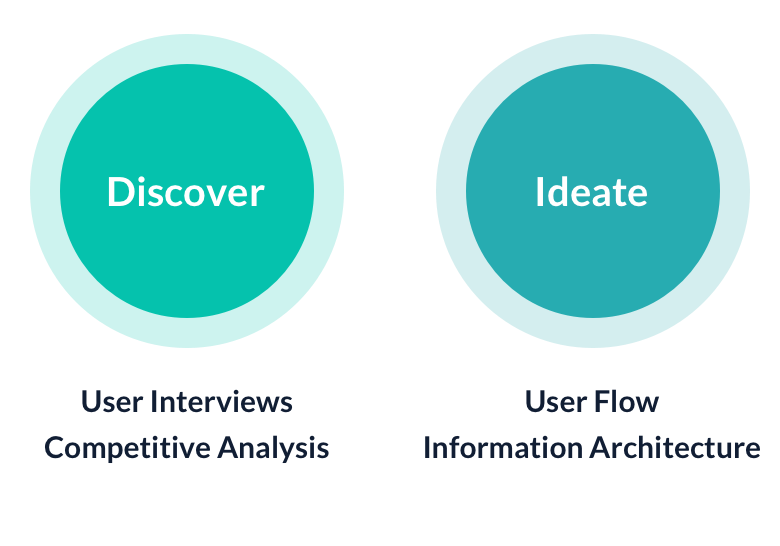
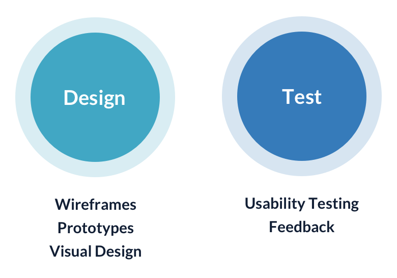
Tools Used:
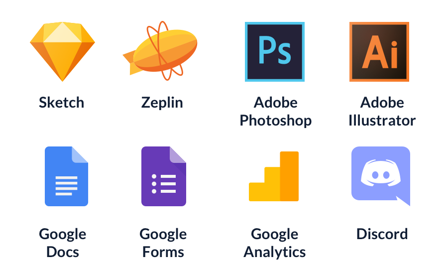My Responsibility:
- Strategy
- Problem Scoping
- Competitor analysis
- User interviews & surveys
- User Flow
- Wireframes
- Prototyping
- Visual Design
- Usability Testing
Discover:
Discover process includes Qualitative and Quantitative research.- Survey: A questionnaire with open questions was sent to 20 users. Users who purchased devices more than a month ago were selected from the DB. The result showed that in general users find it too complicated to use and they want to see more interactivity in the App and be able to share the control of their device with people who are not registered in the app.
- Reviewing users Feedback & Rating: one of the sources of information is reviews and feedbacks in the stores, as well as social networks devoted to the issues of connecting devices and using the App.
- GA: Total amount of events by screens triggered by users after the last update.
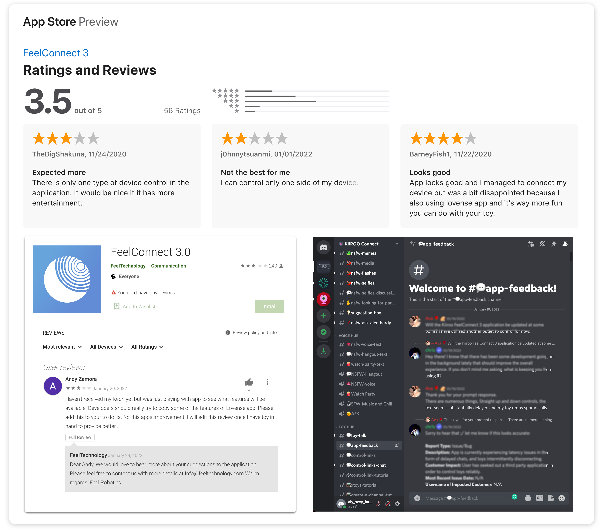
Empathy Map:
To clearly define the target audience and to illustrate their needs and feelings, I made an empathy map. This process helps gain perspective on users thoughts and behaviour. I used the insights from user interviews to build this map.Says:
- "I want everything in one"
- "I like my privacy"
- "I want just share the device in one click"
Does:
- Slides the controller and keeps looking on the device.
- Checking if the device is on.
Thinks:
- Should I connect the device everytime?
- It's too light when I use it at night.
Feels:
- Confused: don't know where to start.
- Worried that it's hard to use smart devices.
The result of discovery process (Problem Statements):
- Users find it too complicated to complite the tasks.
- A larger % of users are interested in the functionality of sharing control of their device with other users.
- Significant issues with device onboarding.
- A high interest in having different ways of device control.
- Low level of the retention users (we provide our partners with advertising platforms where they place various offers and discounts on their devices and accessories, as well as interactive content which includes games and videos)
Brainstorming:
Based on user interviews and an online survey, together with the Product Owner and Communications Manager, we started brainstorming on how to improve the current navigation, group all the items we have and features we can offer in the app. I used card sorting to organise insights from interviews. This is the starting point for creating information architecture and for inventing the functionalities of the application. I found that the app needs to cater to different user types interested in different tasks so the architecture of navigation should be rearranged based on the preferences of the users.
Competitive Benchmarking:
Competitive benchmarking was used to evaluate the position of the product within its industry and to identify industry leadership performance targets. The business models of two major direct competitors were rewieved. As well as applications with the products that are indirectly related to the business.
Possible solutions:
Step 1. Update main navigation.
One of the key characteristics that define app quality is App navigation. Any app’s main navigation component must provide access to all destinations at the top levels of its hierarchy. It enables quick access to features and shifting between grouped sets of functionality.
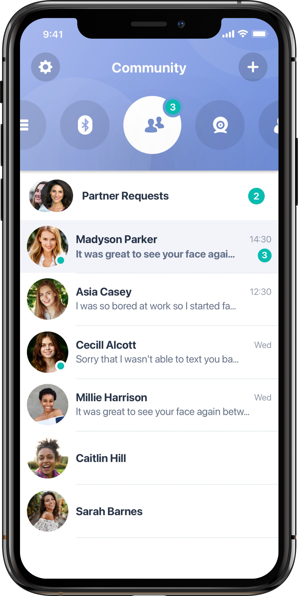
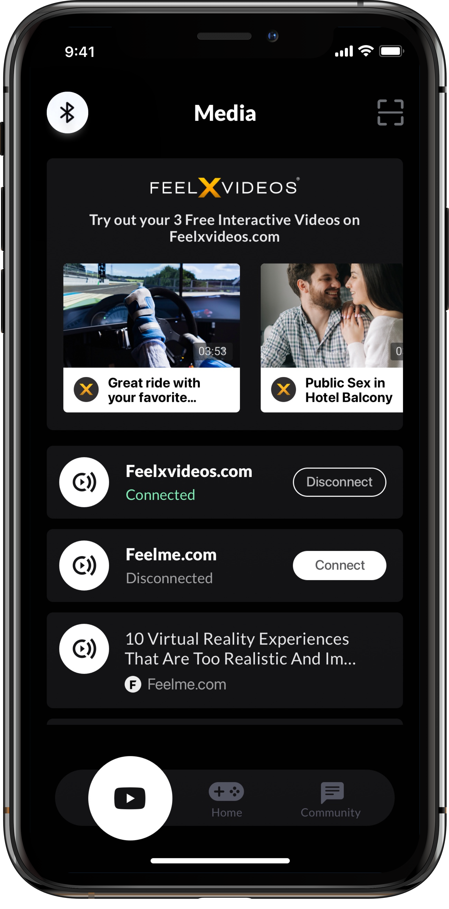
Step 2. Add more ways of controlling connected device.
Updating the current way of controlling devices by adding more ways to control them will keep the user engaged.

Step 3. Update UI.
Appealing user interface designs can help generate more traffic and keep our visitors engaged and retained and become loyal customers.

Step 4. Improve user experience when connecting a device.
Showing in the list of devices ALL Bluetooth-enabled devices in the range of the connection with the notification next to it that it's not supported will improve user experience and minimize complaints about issues with the connections unsupported devices.


Here's a hypothesis we've created:
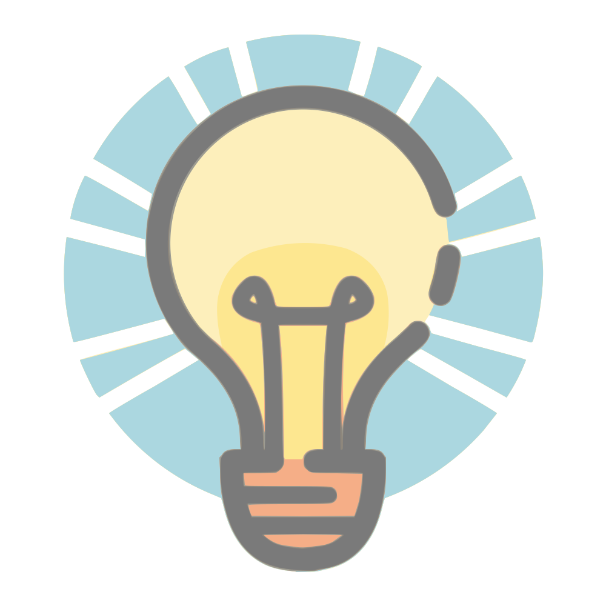
We believe we can increase user retention by up to 75% by adding more entertainment functionality that is most preferred by the users and ability to share the control of the connected device with the other user.
We believe we can increase user retention by up to 75% by adding more entertainment functionality that is most preferred by the users and ability to share the control of the connected device with the other user.
User Flow Navigation:
I created the User Flow to show how to use all the possible ways of controling device. Below is an example of one of the possible ways to control the device.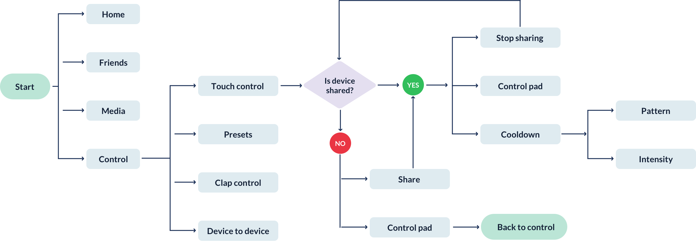
Prototype:
The prototype was prepared on a low-fidelity design and tested within the team, as well as on 3 users of the current app. Also the changes in the navigation were made.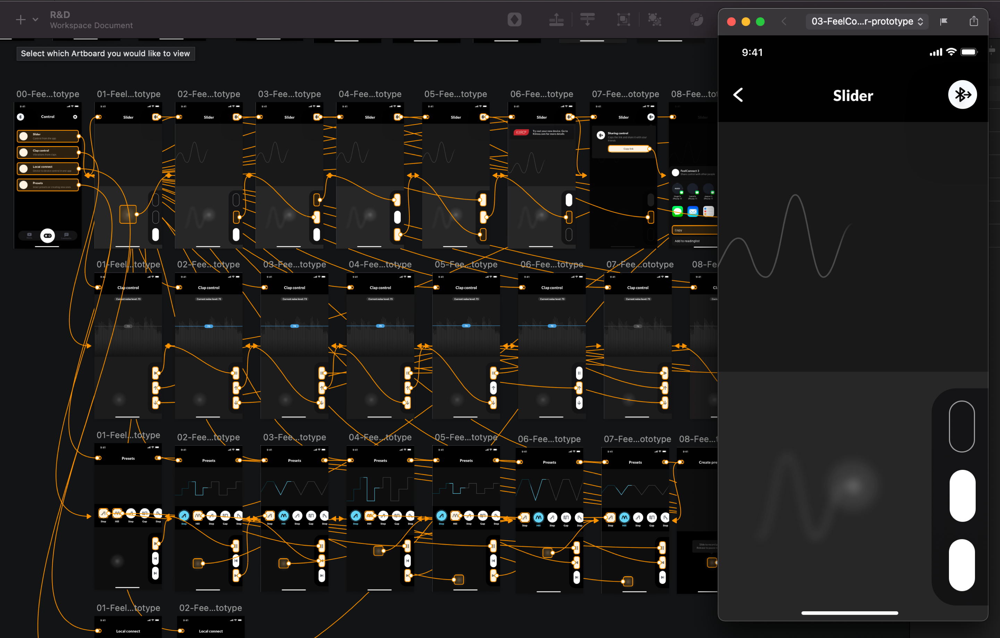
Updated UI:
Device Screen
Touch control
Sharing On

Style Guide:
Colors:
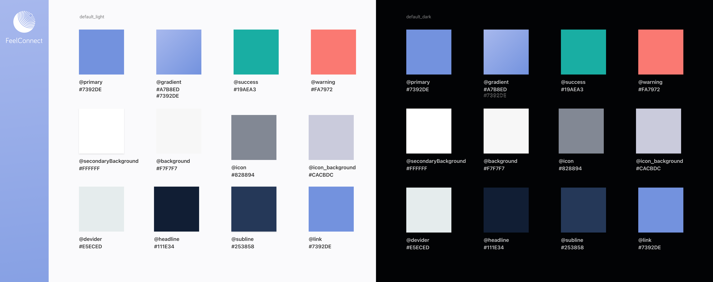
Components:

Form:
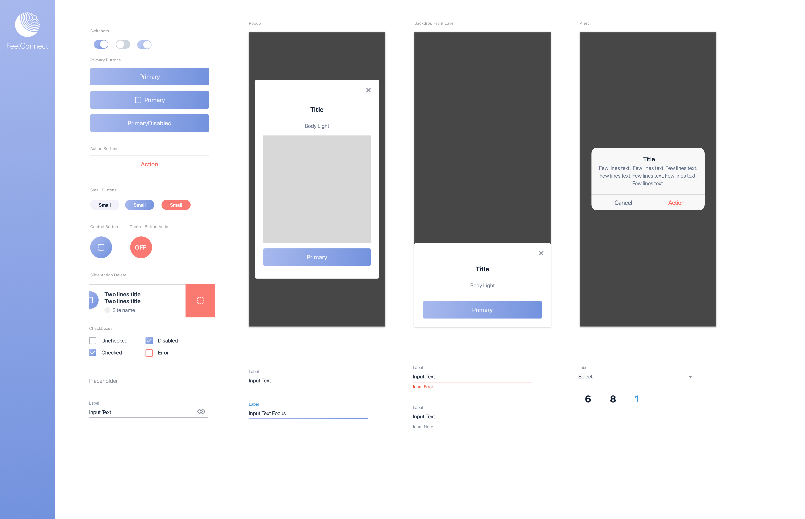
Usability testing & success metrics:
To check if a new UX designs have truly made progress compared to the past designs we conducted the usability test (video call with the 5 representative users of the app).Insights from the usability testing:
- The sharing button is not clearely shown.
- Users not sure how the cooldown mode works.
- Users asked to add option to set the sharing time by themselves.
We keep monitoring social media, which let us to know if our users are talking about the new features. We learned a lot from the users when they are discussing problems. Issues or actually support and happy with the way the app works!
Work closely with the customer support service to monitor any complaints or recommendations from the users.
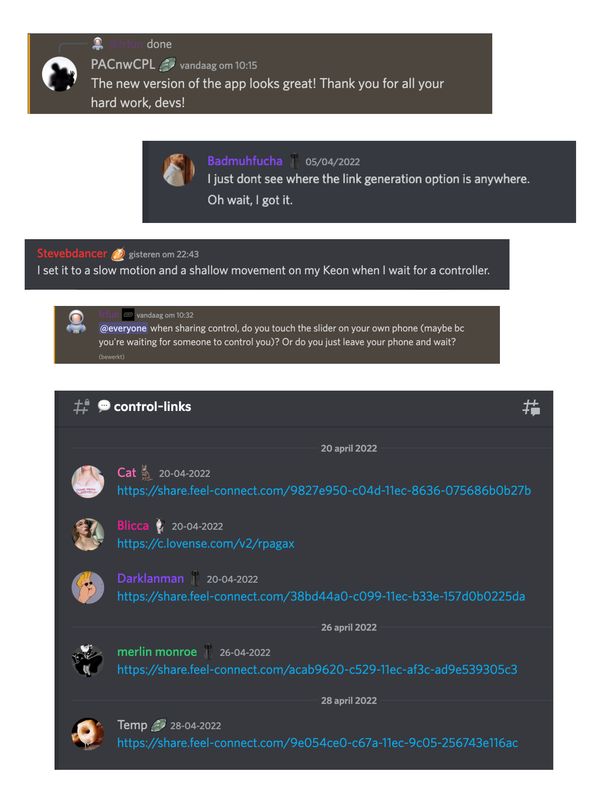
Monitoring set metrics:
It is crucial to determine how effective new app updates have been so I set the user monitoring metrics which are important specifically for this project. I set the metrics to analyse user pain points and then address them to improve.- Customer satisfaction / Feedback after launching a new version of the app: Rating improved by 0.4 (from 3.5 to 3.9)
- Usability tests with the main metrics: completion rate, error rate, average number of errors, time on task.
- GA: user engagement (average session length Improved by 11min 12sec (from 7min 05sec to 18min 17sec), abandonment rate, error rate), daily/monthly active users, user retention rate Improved by 26,9% (from 19k to 26k), conversion rate (the most important metric in this case was the Average purchase revenue per user from sales of accessories ( Improved by 71% (from 14$ to 24$)) for devices that were connected as well as the amount of subscription to interactive content (in case the user prefers it)
Ask for a feedback:
When we request an app rating/feedback: Returning user (user opened the app at least 3 times in 2 weeks) who has watched at least 3 videos in total for at least 2 minutes each without accrued errors.Ask for a feedback
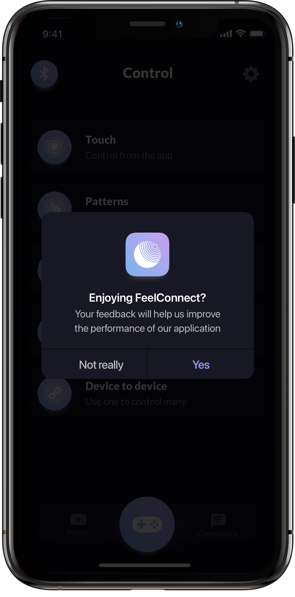
Flow: User clicked "Yes"
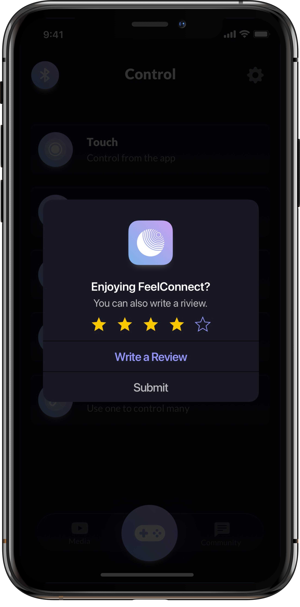
Flow: User clicked "Not really"
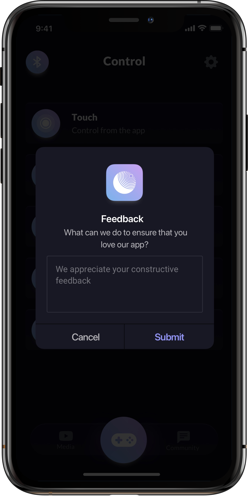